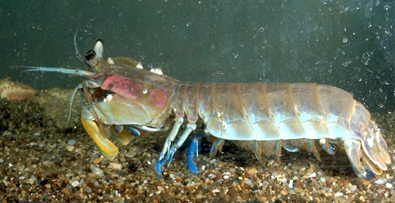

Fatos sobre o Stomatopoda
Dados gerais sobre o Stomatopoda
Nome cientifíco: Odontodactylus scyllarus
| Reino | Animalia |
| Filo | Arthropoda |
| Classe | alacostraca |
| Subclasse | Hoplocarida |
| Ordem | Stomatopoda |
Quem são os Stomatopodas
Os estomatópodes são predadores ativos que caçam presas com o auxílio de um sentido de visão muito apurado e capaz de interpretar polarização no espectro ultravioleta e infravermelho). Apresentam uma grande variação de tamanho, que pode ir de poucos milímetros até aproximadamente 40 cm nas espécies maiores. Eles vivem em fundo consolidado, lodoso ou ainda arenoso, onde cavam seus buracos ou aproveitam-se dos orifícios deixados por outros animais para neles se instalar. São animais exclusivamente carnívoros, alimentando-se de camarões, caranguejos, moluscos, peixes e até mesmo outros da mesma ordem. O segundo par de patas, muito desenvolvido, é usado tanto para atacar a presa como para se defender. O urópodo, quando aberto, também funciona para defesa, como um escudo, fechando a galeria em que o animal esteja instalado. A fêmea desova no local onde se abriga e, em caso de perigo, enrola os ovos como uma bola, prendendo-os junto ao corpo até encontrar um abrigo mais protegido.

Curiosidade sobre o Stomatopoda
São capazes de enfiar um murro a uma velocidade superior aos 80 km/h. Este é o murro mais rápido anotado de qualquer animal existente, com mais de 1500 N de força. A superfície dos seus apêndices que desferem os punhos são cobertos com uma camada extremamente densa de hidroxiopatite, disposta de uma maneira muito resistente à possibilidade de fracturar. O murro é tão rápido que formam bolhas de cavitação entre o alvo e o apêndice; estas bolhas ao colapsarem libertam ondas de choque capazes de atordoar ou matar as suas presas. Desta forma, as presas sofrem dois ataques, o murro inicial e o colapso da bolha.
